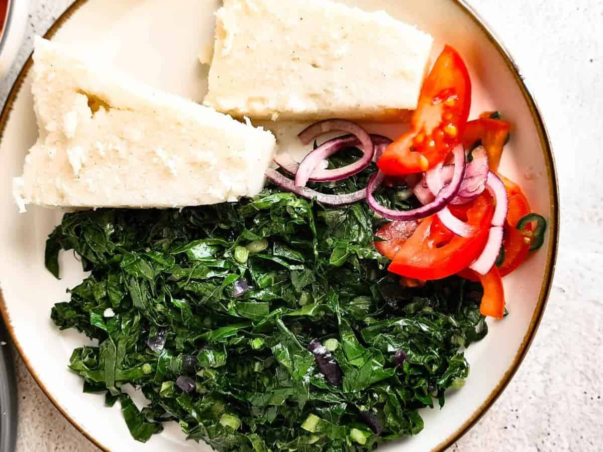

The meal on many Kenyan tables is ugali and sukumawiki. I will share a recipe to prepare this staple meal so you are able to enjoy the delicacy. This will be enjoyed with kachumbari on the side. Here is the preview of the final plating
Please find below links to all the foods on the plate and how to prepare them individually.
Please try out the recipes and share your thoughts on this staple meal!